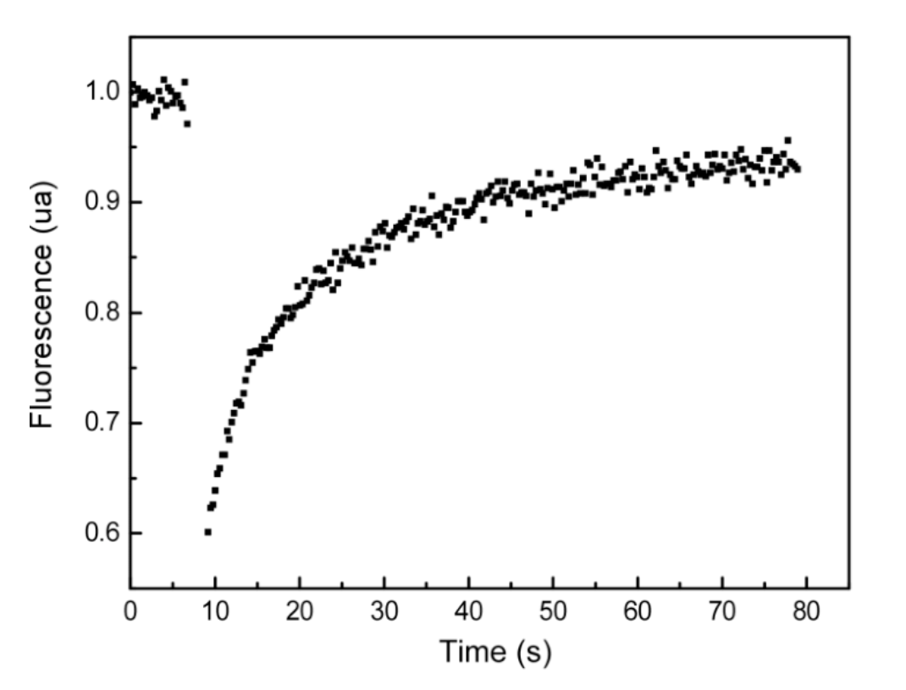

Biology Competition Quiz
Rules:
No switching tabs or minimizing. Your activity is being monitored.
Name:
1. Selenocysteine is derived from which amino acid?
Methionine
Cysteine
Tyrosine
Serine
Lysine
2. During replicative mitosis in a hexaploid human hepatocyte, how many kinetochores are present during metaphase?
6
12
23
138
276
3. Disulfide bonds and nitrate are both uncommon in the cytosol. Nitrate, in particular, is often converted to ammonia after entering the cell. Can you think of a good explanation that connects these two phenomena?
The cytosol contains high levels of oxygen
There is high competition for reactive sulfur
Cellular pH is slightly more alkaline
The cytosol is a naturally reducing environment
Random coincidence
4. Which of the following is true about the trp operon?
Transcription is "on" at high concentrations of tryptophan
Tryptophan acts as an inducer
It is mainly found in eukaryotes
It directly regulates a catabolic pathway
It directly regulates an anabolic pathway
5. Which amino acid contributes most to UV light absorption at ~280 nm?
Phe
Tyr
Trp
His
Pro
6. Dr. Doom wants to isolate mtDNA from a culture of mouse epithelial cells. He trypsinizes and lyses the cells, centrifuges the cells at 5,000 g, removes the supernatant, centrifuges it at 10,000 g, isolates the supernatant again, and centrifuges it at 30,000 g. He then removes the pellet, adds digitonin, a cholesterol-targeting detergent, to break open the mitochondrial membrane, and introduces a DNase to purify the mtDNA. Unfortunately, Dr. Doom is an idiot, and he made a whole host of mistakes during this procedure. Which of the following is NOT a mistake Dr. Doom made?
Adding trypsin to detach cells
Doing three rounds of centrifugation
Adding digitonin to lyse the mitochondrial membrane
Using a DNase to purify the mtDNA
Everything Dr. Doom did was a mistake
7. Robert has suddenly taken an interest in prokaryotic chaperones and decides to do a research project on Trigger Factor. Your friend looks through some of Robert’s initial ndings, however, and is completely appalled. They claim everything Robert has written down is completely wrong. Can you help Robert prove your friend wrong by nding the single accurate statement in Robert’s notes below?
Focused on protein folding and degradation
Chemically interacts with proteins via H-bonds
Interacts with proteins before they’ve emerged from the ribosome
Gene is heavily spliced
Technically classified as a ligase

8. What is the approximate immobile fraction of the membrane in a FRAP experiment?
0.95
0.05
0.6
0.4
0.5
9. FepA is a β-barrel protein found in bacteria. It primarily transports iron as well as vitamin B12 and colicins B and D. Given its role in bacterial survival, finding therapeutics targeting FepA is critical. You are tasked with designing a new drug that can disable this receptor’s function. Select all the following properties that impact the e cacy of your drug? I. Size of molecule II. Affnity for iron III. Proportion of hydrophilic amino acid residues IV. Specificity for FepA’s ligand binding site.
I, II
II, III, IV
I, II, III
I, II, IV
I, III, IV
10. Which of the following reagents would typically be used in a standard RT-PCR run? I. RNA polymerase II. Reverse transcriptase III. E. coli DNA polymerase IV. Pfu DNA polymerase V. DNA primers VI. RNA primers
I, III, V
II, IV, V
II, III, V
II, III, VI
II, IV, VI
Submit